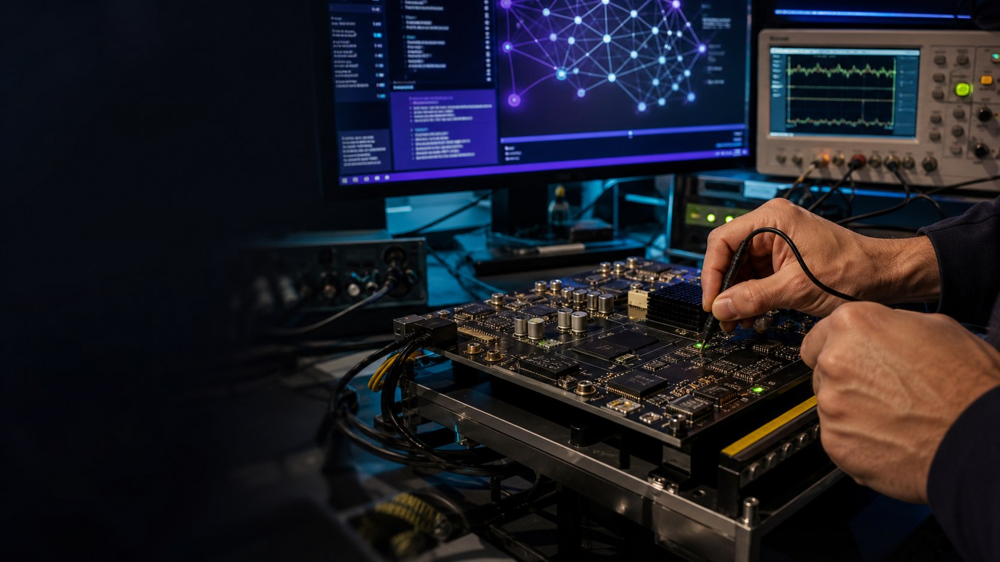

Model developers
Import, compile, and run familiar models.
DEVELOPER CENTER
Tools, documentation, and community for AI developers.

DESIGN PERSPECTIVE
Import, compile, and run familiar models.
Analyze operators, data movement, parallelism, and precision.
Manage devices and connect workloads to production services.
Every engagement connects architecture, software, validation, and production operations.
Start from a model, inspect the compiled graph, profile execution, then take control where it matters.
# HOLYFLOW / CONCEPT
model = flow.import_model(source)
program = flow.compile(model, target)
report = flow.profile(program)
flow.deploy(program, device_pool)ENGAGEMENT MODEL
FAQ
Developer preview resources will be released progressively; this site will not offer placeholder downloads.
Installation, migration, operators, profiling, deployment, and API reference.
Yes—particularly compiler, operator, model, and system research.
CHOOSE YOUR PERSPECTIVE
Find concepts, requirements, installation, and a first example.
Follow this path →Use model support, APIs, samples, debugging, and deployment.
Follow this path →Access kernels, memory, parallelism, profiling, and architecture guides.
Follow this path →TECHNICAL EVALUATION
| Dimension | Question | Validation |
|---|---|---|
| Quickstart | Run a first workload with minimal ambiguity | Provide environment checks, installation, sample, and expected output |
| Model catalog | Know what has been validated | Maintain versioned coverage and known limitations |
| API guides | Build and extend the platform | Document concepts, interfaces, examples, and errors |
| Profiling and debug | Understand performance and failures | Provide logs, timelines, counters, and diagnosis |
| Releases | Know what changes between versions | Maintain notes, compatibility, and migration guidance |
| Community and support | Discuss, track, and resolve issues | Plan feedback, technical discussion, and contribution paths |
WORKLOAD MAP
Architecture, tutorials, terminology, and progressive courses.
Runnable model, operator, system, and deployment projects.
Baseline and optimize with analysis tools.
Improve docs, operators, models, and tools.
ADOPTION PATH
Prioritize API feedback, coverage, and tooling.
Co-develop around a defined product or industry workload.
Provide versions, compatibility, docs, samples, and lifecycle.
PRODUCTION READINESS
Health, fault isolation, recovery, and long-run validation.
Boot, identity, access, update, and data-boundary planning.
Telemetry that connects model behavior to system state.
Versioning, compatibility, rollback, maintenance, and support.
RESOURCES & STATUS
Product direction, architecture principles, workloads, and evaluation framework on this site.
Workload definition, environment requirements, success metrics, and test planning.
Specifications, compatibility, SDKs, docs, release notes, and validated model status will follow maturity.
Import, compile, run, and profile reference models.
We welcome research, open-source, and industry collaborators.
READY TO BUILD?